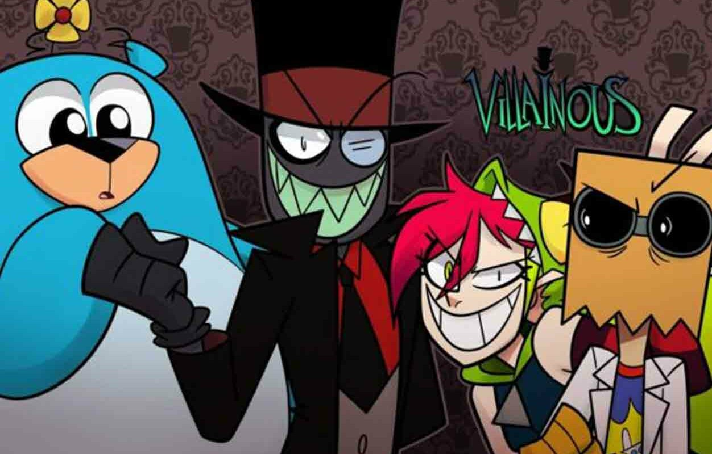
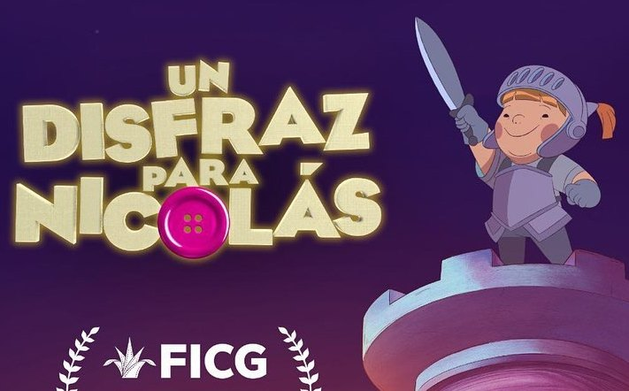
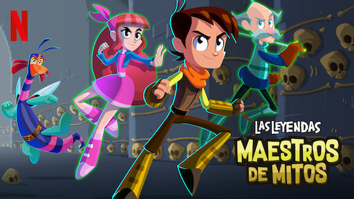
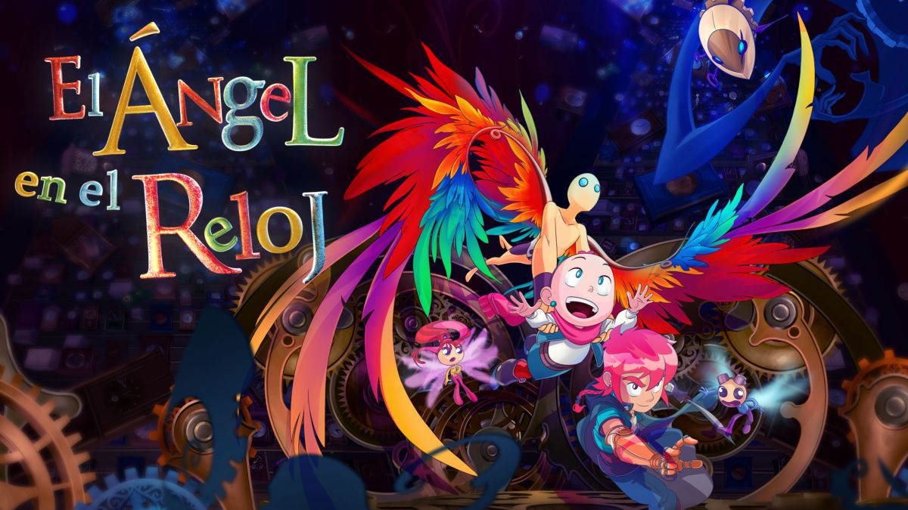
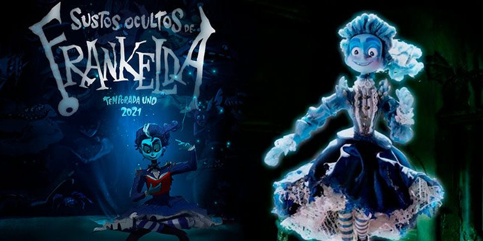
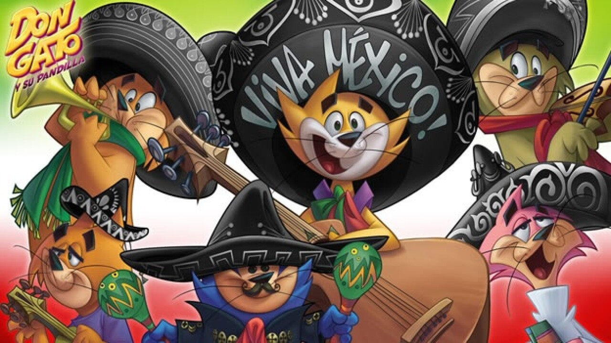
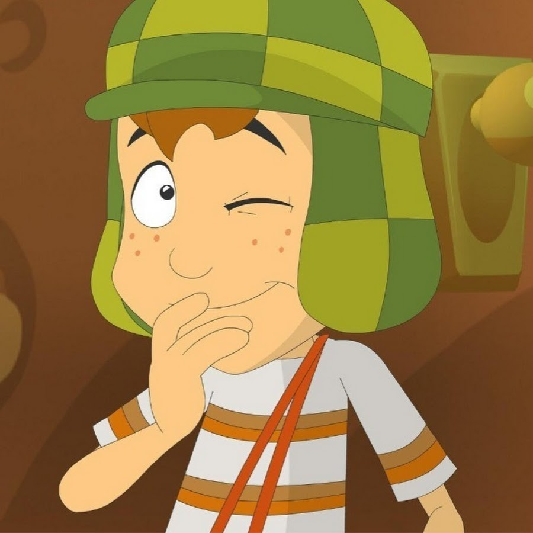
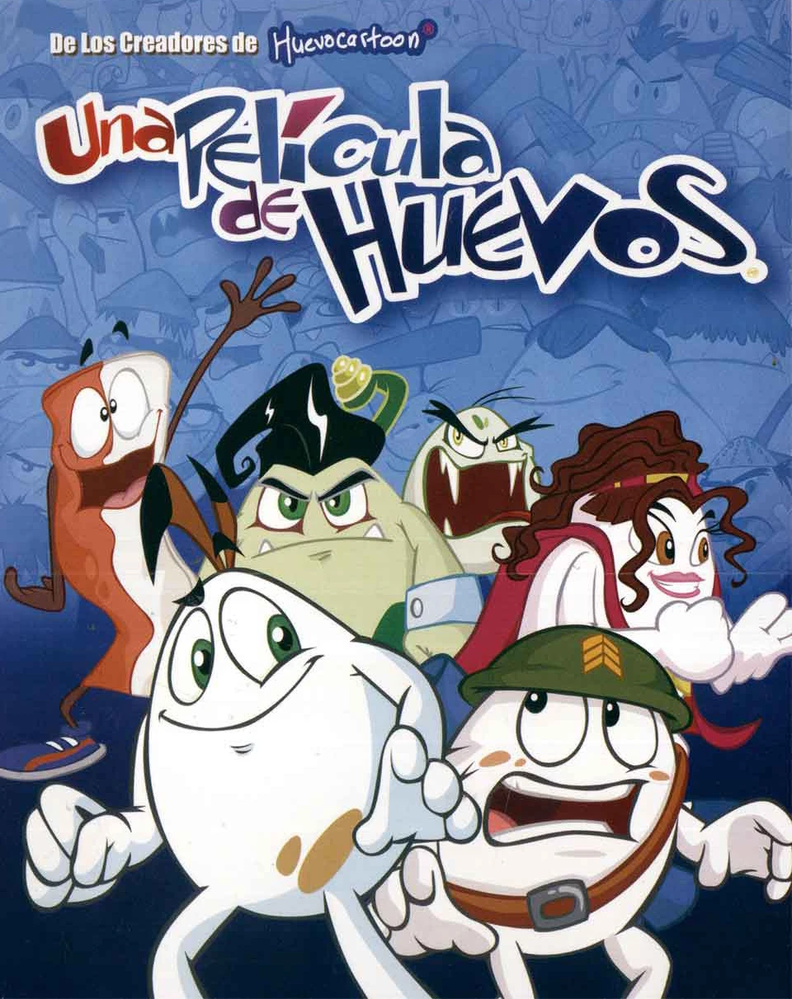
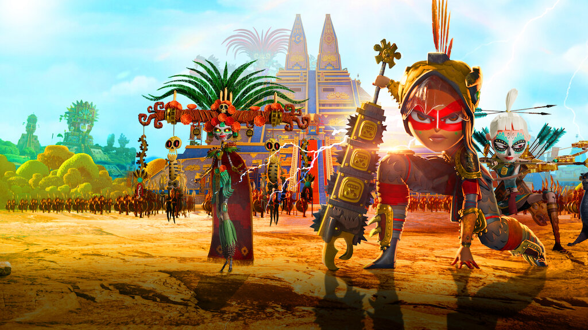
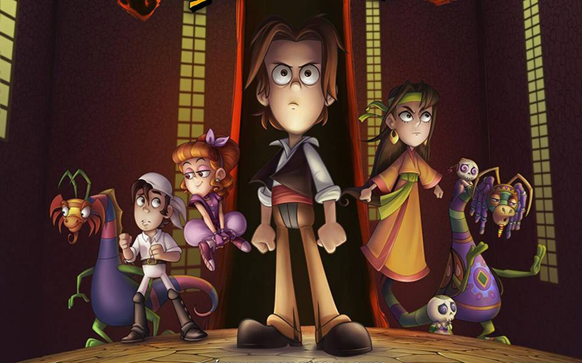

Villanos es una serie de televisión animada mexicana producida por A.I. Animation Studios para Cartoon Network Latinoamérica, siendo distribuida por este último y HBO Max, creada por el animador mexicano Alan Ituriel. Black Hat, el villano más malvado que existe, es el líder de la maligna organización Black Hat de ayuda y consultoría para villanos. Sin embargo los objetivos de la organización frecuentemente son frustrados por los mismos secuaces de Black Hat: El científico de la organización, Dr. Flug. La errática agente y fanática de Black Hat, Demencia, y el experimento fallido y adorable 5.0.5.
Un disfraz para Nicolás es la nueva fábula de Fotosíntesis Media, casa productora interesada en crear entretenimiento con causa, y que ya había hecho El ángel en el reloj, película sobre el cáncer infantil. En este caso, Nicolás es un niño con síndrome de Down. Nicolás es un niño al que su mamá le dejó un baúl lleno de disfraces, donde encuentra un portal a un reino de sueños que tendrá que salvar.
Las Leyendas es una serie de televisión animada mexicana de fantasía, comedia y terror creada por Ánima Estudios para la plataforma Netflix. La serie está basada en la saga de películas de Las Leyendas. Esta es la primera serie de animación original de la red de streaming producida en América Latina. Cuando el dotado adolescente Leo y su pueblo en Nueva España son atacados por criaturas del otro mundo, será echado junto con sus amigos Teodora, Don Andrés y Alebrije. Juntos, con una pequeña ayuda de algunos aliados de todo el mundo, harán todo lo posible para detener el supremo mal que planea erradicar a la humanidad de su historia.
El ángel en el reloj es una película mexicana perteneciente al género de animación y aventuras, producido por el estudio Fotosíntesis Media y dirigido por Miguel Ángel Uriegas y escrito por Rosana Curiel. En el México contemporáneo Amelia es una pequeña niña, alegre y pícara, pero cuyo mayor deseo en la vida es poder detener el tiempo. Su deseo se debe a que la pequeña ha sido diagnosticada con leucemia, por lo que desea prolongar su vida.
Los Sustos Ocultos de Frankelda ("Frankelda's Book of Spooks" en inglés) es una serie mexicana de televisión, animada en stop-motion, de antología y terror, creada por los hermanos Arturo y Roy Ambriz Rendón, producida por el estudio de animación Cinema Fantasma. Alojada en HBO Max. Frankelda, una misteriosa escritora fantasma, cuenta historias aterradoras a los espectadores con ayuda de su gruñón libro encantado, donde niñas y niños tienen encuentros con gnomos, brujas, monstruos, sirenas y demás criaturas espeluznantes conocidas como «los sustos» que los harán enfrentarse a sus miedos más profundos. Todo lo anterior mientras han estado atrapados en una mansión con conciencia propia por siglos.
Don Gato y su Pandilla es una película mexicana-argentina animada de 2011, dirigida por Alberto Mar. Fue producida por Ánima Estudios, productora también de series como El Chavo animado. La película está basada en la serie de los años 60, Don Gato y su pandilla, creación de Hanna-Barbera. Don Gato y su pandilla se enfrentan a un nuevo jefe policíaco, quien no está muy contento con la actuación del pobre oficial Matute quien intenta prevenir las estafas de Don Gato.
El Chavo animado (también conocido como El Chavo, la serie animada o simplemente El Chavo) es una serie animada de televisión mexicana producida por Televisa y Ánima Estudios. La serie estuvo al aire durante 7 temporadas, dando inicio el 21 de octubre de 2006 y finalizando el 6 de junio de 2014. Serie de caricaturas animada basada en el programa mexicano de los años 70 de situaciones cómicas, que por el contrario tenía personas reales y que ha sido una de las series más vistas en los países hispanohablantes, la cual fue muy popular entre grandes y chicos de varias generaciones.
Una película de huevos es una película mexicana de animación producida por Huevocartoon. Dirigida por Rodolfo Riva Palacio y Gabriel Riva Palacio y escrita por el primero, producida por Carlos Zepeda Chehaibar y Elisa Salinas, es el primer largometraje de Huevocartoon. Un huevo pequeño llamado Toto decide que quiere cumplir su propósito en la vida y convertirse en un pollo en lugar de terminar en un pan tostado; y planea regresar a las granjas con sus nuevos amigos, el huevo Willy y una alocada rebanada de tocino.
Maya y los tres es una miniserie animada mexicana del año 2021, creada por Jorge R. Gutierrez (El Tigre: Las aventuras de Manny Rivera y El libro de la vida) y distribuida mundialmente por Netflix. Maya, una princesa guerrera del pueblo Teca tras cumplir 15 años se ve envuelta en una disputa con los dioses del inframundo. Ahora Maya tendrá que embarcarse en una aventura donde deberá cumplir una profecía que dice que se unirá junto con 3 campeones para vencer a los dioses.
La leyenda del Charro Negro es una película de animación mexicana realizada por Ánima Estudios, basada en la leyenda del Charro Negro, que se estrenó el 19 de enero de 2018 en las salas de cine mexicanas. Leo San Juan decide regresar a casa de su abuela. Sin embargo, en el camino se cruza con el Charro Negro, quien logra engañarlo y hace que una chica inocente acabe en el inframundo. Leo no tiene más remedio que rescatarla.
